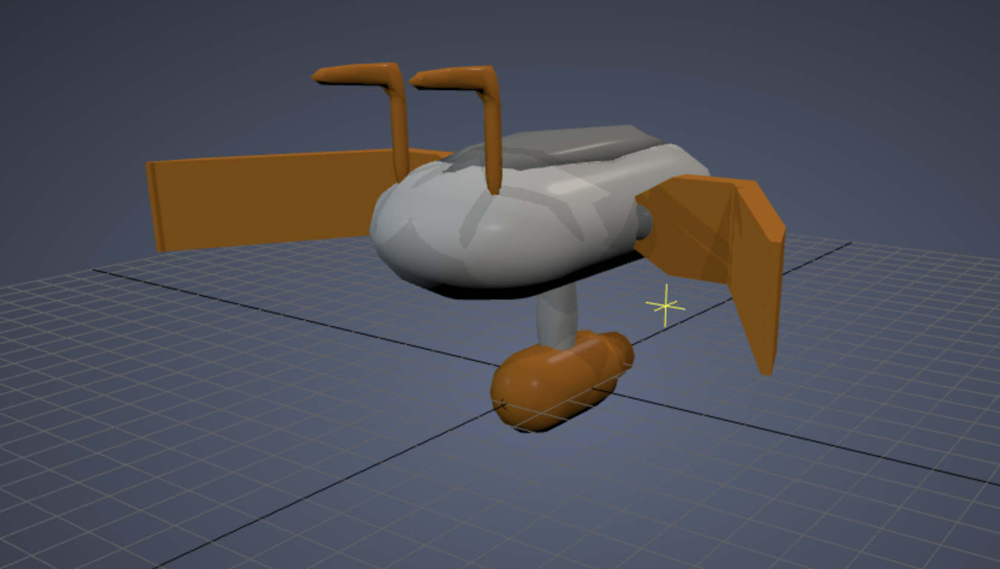
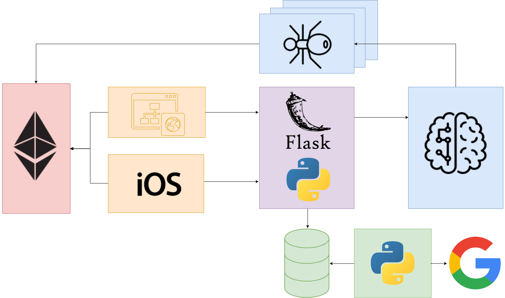

What was used?
The process of the design for the Oclean project required multiple features and tools to achieve it. In particular, the core of the application resides in a bioinspired algorithm, where the bots work searching for trash in the area where they are deployed. Scraping has been an important part to collect the news that show the impact of this catastrophe all around the globe, saving only the important and needed data in a MySQL database.
Blockchain tecniques have been used in order to supply a donation tool for people to do their bit.
Along other software tools, backend part has used Python programming language for the data extraction and algorithmia.
In the app part, all the source code has been programmed in Swift and Solidity . Finally all the tools converge in a web server where we have used an API that communicates with the interphace providing all the data and information needed for the data processing.
3D Design
The design of the Anboats is currently on the works, here you have a look at the making process, where we get an idea of how it will look in real life. A bot that moves with a turbine and whose metallic arms pick the trash up and traps it inside a net.
General structure
In general terms, the visualization of the arquitecture and data flow is, as it follows. The mobile app and the webpage communicates with both Celerium (Blockchain part) and the Flask API (designed with Python) requesting the data of the news, organizations and donations that Oclean offers.
As we mentioned before, data extraction means an important part of the project, all this using the data extraction service in Python offered by the GoogleNews API and storing the results in a MySQL database in the webserver.
General idea
As a result of the algorithmia, this is a simulation of the process of working of the antboats collecting trash. This process is described in general terms in the Problematic page.